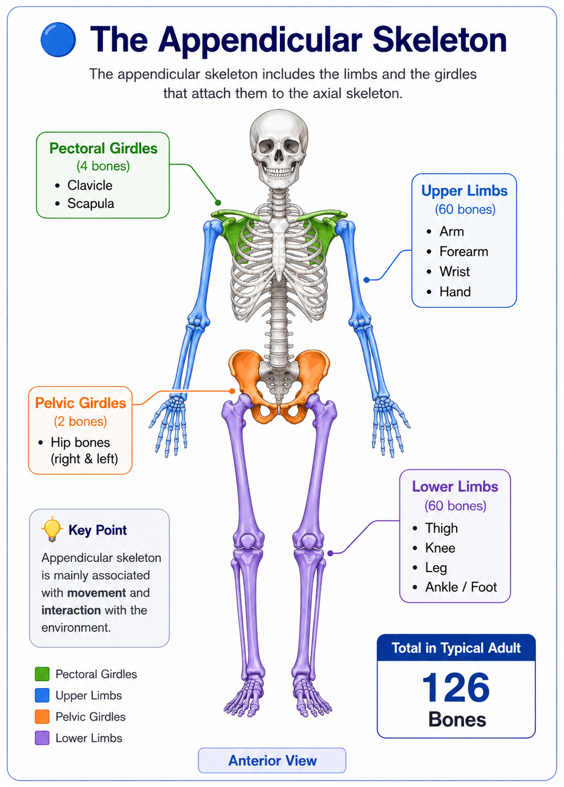
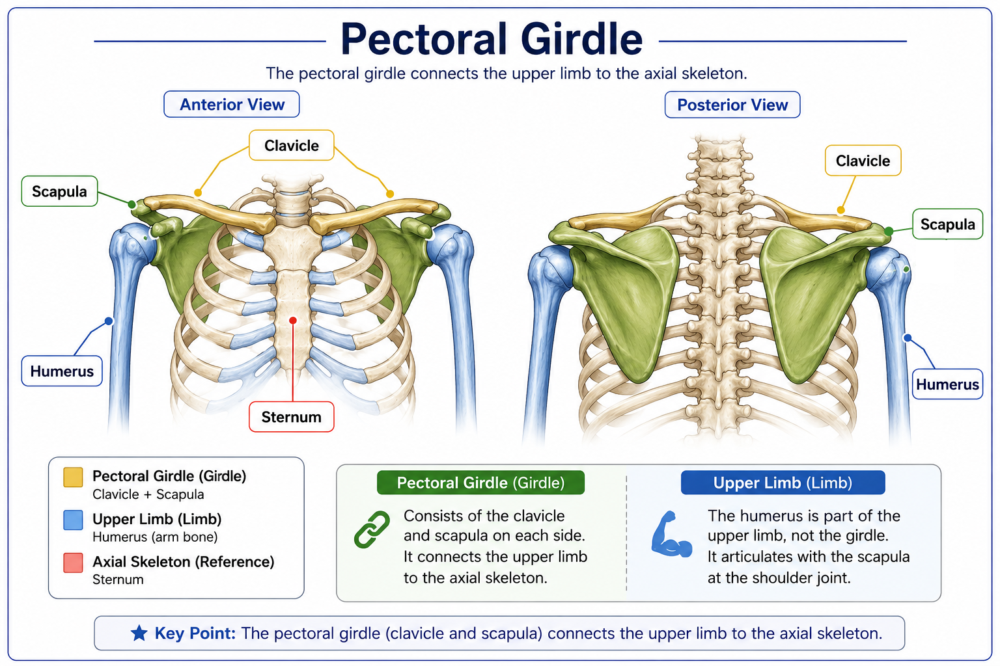
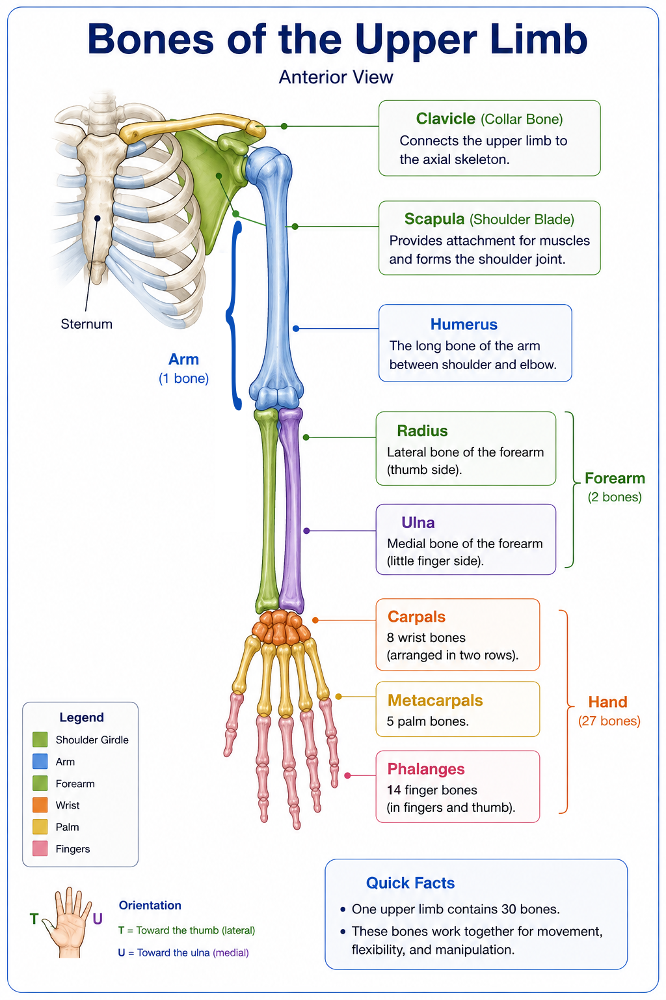
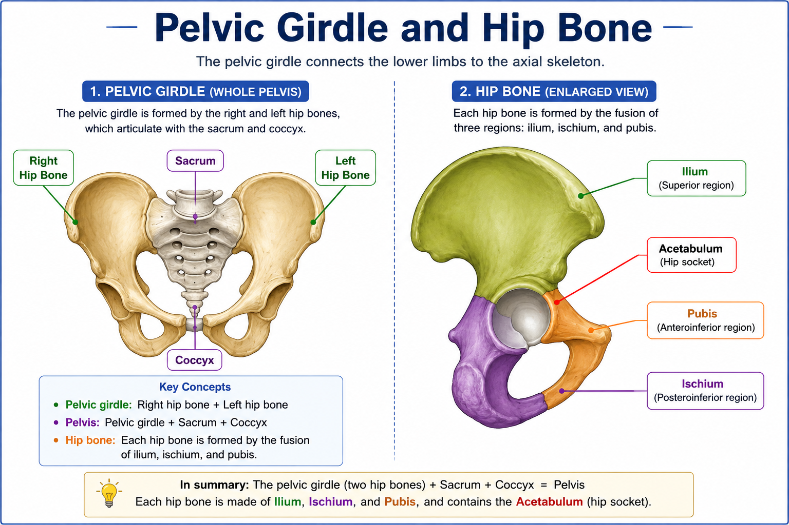
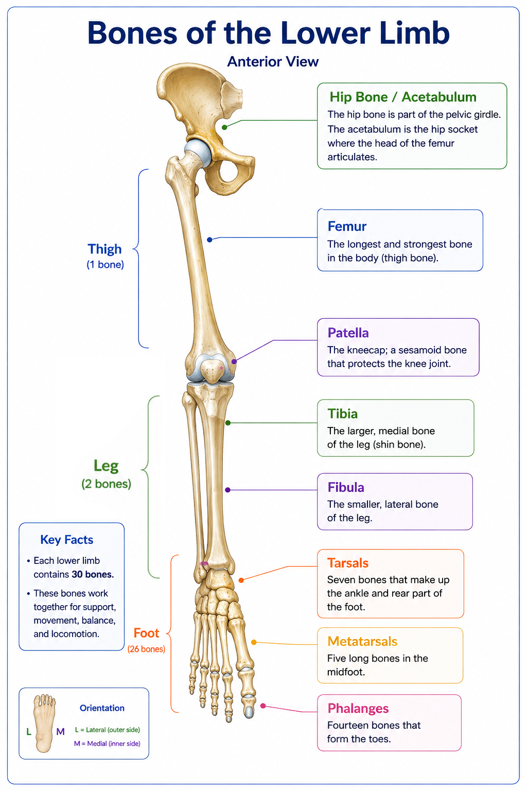

🦴 Appendicular Skeleton
The appendicular skeleton consists of the limbs and the structures that attach them to the axial skeleton. In a typical adult, it contains 126 bones.
🔵 What Is the Appendicular Skeleton?
The appendicular skeleton includes the bones of the upper and lower limbs and the girdles that connect these limbs to the axial skeleton.
Its main role is to support movement and interaction with the environment. In the typical adult skeleton, the appendicular division contains 126 bones.

The appendicular skeleton includes the pectoral girdles, upper limbs, pelvic girdle, and lower limbs.
🦴 The Pectoral Girdle
The pectoral girdle connects each upper limb to the axial skeleton. Each pectoral girdle consists of two bones: the clavicle and scapula.
Together, the right and left pectoral girdles contain 4 bones. They provide a highly mobile attachment for the upper limbs.

The pectoral girdle connects the upper limb to the axial skeleton through the clavicle and scapula.
💪 The Upper Limb
Each upper limb contains 30 bones. These are organized into the arm, forearm, wrist, and hand.

The upper limb consists of the arm, forearm, wrist, and hand. Major bones include the humerus, radius, ulna, carpals, metacarpals, and phalanges.
| Region | Bones | Count |
|---|---|---|
| Arm | Humerus | 1 |
| Forearm | Radius + Ulna | 2 |
| Wrist | Carpals | 8 |
| Hand | Metacarpals | 5 |
| Fingers & thumb | Phalanges | 14 |
| One upper limb | Total | 30 |
🦴 The Pelvic Girdle
The pelvic girdle connects the lower limbs to the axial skeleton. It consists of the right and left hip bones.
Each adult hip bone is formed by the fusion of three regions: ilium, ischium, and pubis.
The acetabulum is the socket where the head of the femur articulates with the hip bone.

The pelvic girdle consists of two hip bones. Together with the sacrum and coccyx, they form the pelvis.
🦵 The Lower Limb
Each lower limb contains 30 bones. These form the thigh, knee, leg, ankle, and foot.

The lower limb consists of the thigh, knee, leg, ankle, and foot. Major bones include the femur, patella, tibia, fibula, tarsals, metatarsals, and phalanges.
| Region | Bones | Count |
|---|---|---|
| Thigh | Femur | 1 |
| Knee | Patella | 1 |
| Leg | Tibia + Fibula | 2 |
| Ankle / foot | Tarsals | 7 |
| Foot | Metatarsals | 5 |
| Toes | Phalanges | 14 |
| One lower limb | Total | 30 |
🔢 How Many Bones Are in the Appendicular Skeleton?
The appendicular skeleton contains 126 bones in the typical adult. These are distributed between the girdles and the four limbs.
| Component | Bones |
|---|---|
| Pectoral girdles | 4 |
| Upper limbs | 60 |
| Pelvic girdles | 2 |
| Lower limbs | 60 |
| Appendicular skeleton | 126 |
🧠 Remember
📌 Quick Revision
✅ The appendicular skeleton contains 126 bones in the typical adult.
✅ It includes the pectoral girdles, upper limbs, pelvic girdles, and lower limbs.
✅ Each pectoral girdle contains a clavicle and a scapula.
✅ Each upper limb contains 30 bones.
✅ Each hip bone is formed by the fusion of the ilium, ischium, and pubis.
✅ Each lower limb contains 30 bones.
✅ The appendicular skeleton is mainly associated with movement.
❓ Lesson Quiz
Ready to test your understanding of the appendicular skeleton?
Complete the quiz to reinforce what you have learned in Lesson 3.3.